स्कन्ध 11 · अध्याय 13
श्लोक १
श्रीभगवानुवाच–
सत्वं रजस्तम इति गुणा बुद्धेर्न चात्मनः ।
सत्वेनान्यतमौ हन्यात् सत्वं सत्त्वेन चैव हि ।। १ ।।
सत्वं रजस्तम इति गुणा बुद्धेर्न चात्मनः ।
सत्वेनान्यतमौ हन्यात् सत्वं सत्त्वेन चैव हि ।। १ ।।
भागवततात्पर्यनिर्णय
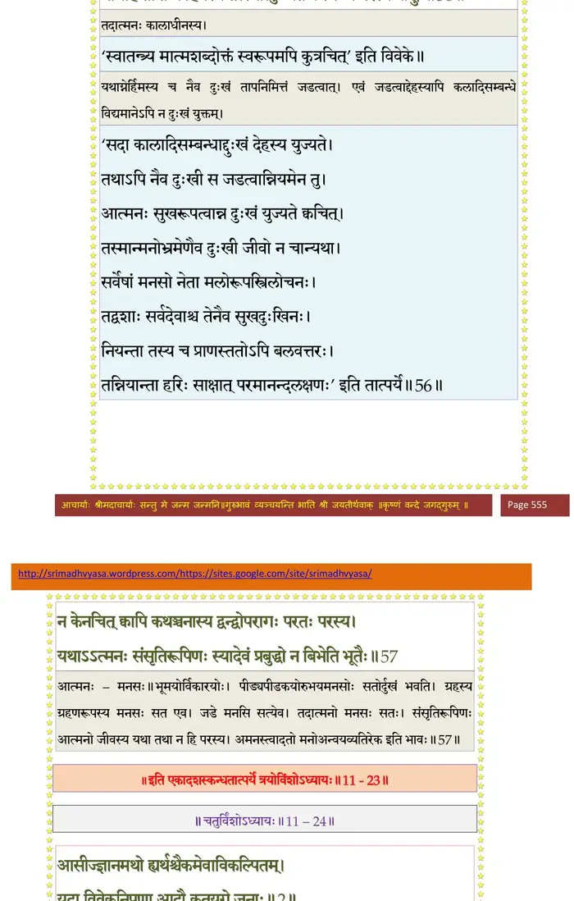
श्लोक २
सत्वाद् धर्मो भवेच्छुद्धात् पुंसो मद्भक्तिलक्षणः ।
सात्विकोपात्तया ज्ञानं ततो धर्मः प्रवर्तते ।। २ ।।
सात्विकोपात्तया ज्ञानं ततो धर्मः प्रवर्तते ।। २ ।।
भागवततात्पर्यनिर्णय
श्लोक ३
धर्मो रजस्तमो हन्यात् सत्ववृ(द्धि)त्तिरनुत्तमा ।
आशु नश्यति तन्मूलो ह्यधर्म उभये हते ।। ३ ।।
आशु नश्यति तन्मूलो ह्यधर्म उभये हते ।। ३ ।।
श्लोक ४
आगमोऽर्थः प्रजा (यजनं) देशः कालः कर्म च जन्म च ।
ध्यानं मन्त्रोऽथ संस्कारो (मन्त्र उपस्कारो) दशै (नवै)ते गुणहेतवः ।। ४ ।।
ध्यानं मन्त्रोऽथ संस्कारो (मन्त्र उपस्कारो) दशै (नवै)ते गुणहेतवः ।। ४ ।।
श्लोक ५
तत्तत् सात्विकमेवैषां यद्यद् वृद्धाः प्रचक्षते ।
निन्दन्ति तामसं तत्तद् राजसं तदुपेक्षितम्।। ५ ।।
निन्दन्ति तामसं तत्तद् राजसं तदुपेक्षितम्।। ५ ।।
श्लोक ६
सात्विकान्येव सेवेत पुमान् सत्वविवृद्धये ।
ततो धर्मस्ततो ज्ञानं वाचः स्मृतिरपोहनम् ।। ६ ।।
ततो धर्मस्ततो ज्ञानं वाचः स्मृतिरपोहनम् ।। ६ ।।
श्लोक ७
वेणुसङ्घर्षजो वह्निर्दग्ध्वा शाम्यति तद्वनम् ।
एवं गुणव्यत्ययजो वेदः शाम्यति तद् यथा ।। ७ ।।
एवं गुणव्यत्ययजो वेदः शाम्यति तद् यथा ।। ७ ।।
भागवततात्पर्यनिर्णय
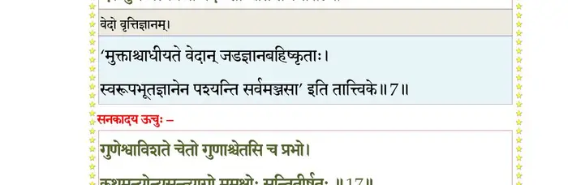
श्लोक ८
उद्धव उवाच–
विन्दन्ति मर्त्याः प्रायेण विषयान् पदमापदाम् ।
अथापि भुञ्जते कृष्ण तत् कथं श्वखराजवत् ।। ८ ।।
विन्दन्ति मर्त्याः प्रायेण विषयान् पदमापदाम् ।
अथापि भुञ्जते कृष्ण तत् कथं श्वखराजवत् ।। ८ ।।
श्लोक ९
श्रीभगवानुवाच–
अहमित्यन्यथाबुद्धिः प्रमत्तस्य यदा हृदि ।
उत्सर्पति रजो घोरं ततो वैकारिकं मनः ।। ९ ।।
अहमित्यन्यथाबुद्धिः प्रमत्तस्य यदा हृदि ।
उत्सर्पति रजो घोरं ततो वैकारिकं मनः ।। ९ ।।
श्लोक १०
रजोयुक्तस्य मनसः सङ्कल्पः सविकल्पकः ।
ततः कामो गुणध्यानाद् दुःसहः स्याद् हि दुर्मतेः ।।१०।।
ततः कामो गुणध्यानाद् दुःसहः स्याद् हि दुर्मतेः ।।१०।।
श्लोक ११
करोति कामवशगः कर्माण्यविजितेन्द्रियः ।
दुःखोदर्काणि संपश्यन् रजोवेगविमोहितः ।। ११ ।।
दुःखोदर्काणि संपश्यन् रजोवेगविमोहितः ।। ११ ।।
श्लोक १२
रजस्तमोभ्यां यदपि विद्वान् विक्षिप्तधीः पुनः ।
अतन्द्रितो मनो युञ्जन् दोषदृष्टिर्न सज्जते ।। १२ ।।
अतन्द्रितो मनो युञ्जन् दोषदृष्टिर्न सज्जते ।। १२ ।।
श्लोक १३
अप्रमत्तो हि युञ्जीत मनो मय्यर्पयन् शनैः ।
अनिर्विण्णो यथाकालं (कामं) जितश्वासो जितासनः।। १३ ।।
अनिर्विण्णो यथाकालं (कामं) जितश्वासो जितासनः।। १३ ।।
श्लोक १४
एतावान् योग आदिष्टो मच्छिष्यैः सनकादिभिः ।
सर्वतो मन आकृष्य मय्यद्धाऽऽवेश्यते यथा ।। १४ ।।
सर्वतो मन आकृष्य मय्यद्धाऽऽवेश्यते यथा ।। १४ ।।
श्लोक १५
उद्धव उवाच–
यदा त्वं सनकादिभ्यो येन रूपेण केशव ।
योगमादिष्टवानेतद् रूपमिच्छामि वेदितुम् ।। १५ ।।
यदा त्वं सनकादिभ्यो येन रूपेण केशव ।
योगमादिष्टवानेतद् रूपमिच्छामि वेदितुम् ।। १५ ।।
श्लोक १६
श्रीभगवानुवाच–
पुत्रा हिरण्यगर्भस्य मानसाः सनकादयः ।
पप्रच्छुः पितरं सूक्ष्मां योगस्यैकान्तिकीं गतिम् ।। १६ ।।
पुत्रा हिरण्यगर्भस्य मानसाः सनकादयः ।
पप्रच्छुः पितरं सूक्ष्मां योगस्यैकान्तिकीं गतिम् ।। १६ ।।
श्लोक १७
सनकादय ऊचुः–
गुणेष्वाविशते चेतो गुणाश्चेतसि च प्रभो ।
कथमन्योन्यसन्त्यागो मुमुक्षोः सन्तितीर्षतः (सन्तितीर्षोः) ।। १७ ।।
गुणेष्वाविशते चेतो गुणाश्चेतसि च प्रभो ।
कथमन्योन्यसन्त्यागो मुमुक्षोः सन्तितीर्षतः (सन्तितीर्षोः) ।। १७ ।।
भागवततात्पर्यनिर्णय
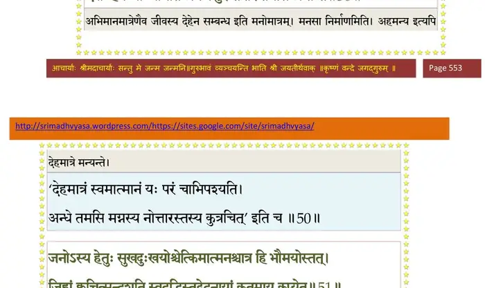
श्लोक १८
श्रीभगवानुवाच–
एवं पृष्टो महादेवः स्वयम्भूर्भूतभावनः ।
ध्यायमानः प्रश्नबीजं नाभ्यपद्यत कर्मधीः ।। १८ ।।
एवं पृष्टो महादेवः स्वयम्भूर्भूतभावनः ।
ध्यायमानः प्रश्नबीजं नाभ्यपद्यत कर्मधीः ।। १८ ।।
भागवततात्पर्यनिर्णय
श्लोक १९
स मामचिन्तयद् देवः प्रश्नपारविनिश्चयम् ।
तस्याहं हंसरूपेण समीपमगमं तदा ।। १९ ।।
तस्याहं हंसरूपेण समीपमगमं तदा ।। १९ ।।
भागवततात्पर्यनिर्णय
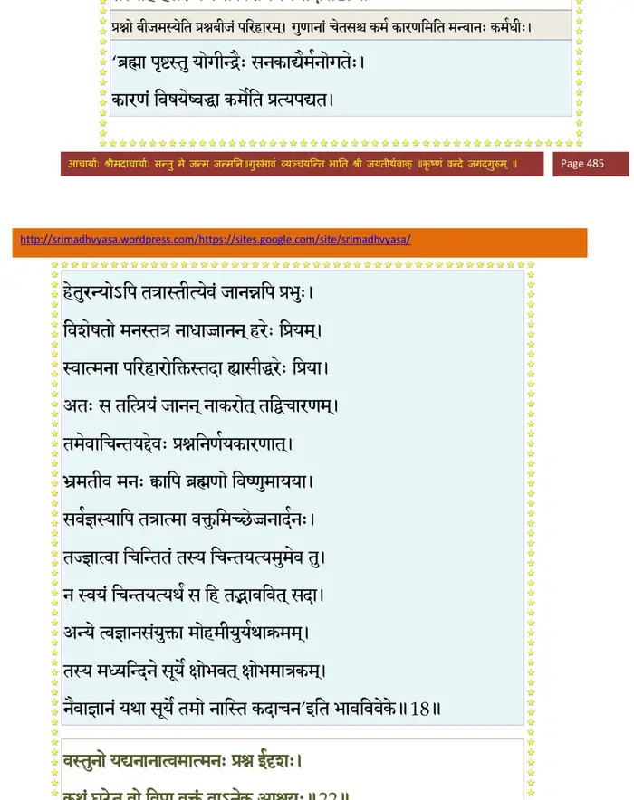
श्लोक २०
दृष्ट्वा मां त उपाव्रज्य कृतपादाभिवन्दनम् ।
ब्रह्माणमग्रतः कृत्वा पप्रच्छुः को भवानिति ।। २० ।।
ब्रह्माणमग्रतः कृत्वा पप्रच्छुः को भवानिति ।। २० ।।
श्लोक २१
इत्यहं मुनिभिः पृष्टस्तत्वजिज्ञासुभिस्तदा ।
यदवोचमहं तेभ्यस्तदुद्धव निबोध मे ।। २१ ।।
यदवोचमहं तेभ्यस्तदुद्धव निबोध मे ।। २१ ।।
श्लोक २२
वस्तुनो यद्यनानात्वमात्मनः प्रश्न ईदृशः ।
कथं घटेत वो विप्रा वक्तुं वाऽनेक आश्रयः ।। २२ ।।
कथं घटेत वो विप्रा वक्तुं वाऽनेक आश्रयः ।। २२ ।।
भागवततात्पर्यनिर्णय
श्लोक २३
पञ्चात्मकेषु भूतेषु समानेषु च वस्तुतः ।
को भवानिति वः प्रश्नो वाचारम्भो निरर्थकः ।। २३ ।।
को भवानिति वः प्रश्नो वाचारम्भो निरर्थकः ।। २३ ।।
भागवततात्पर्यनिर्णय
श्लोक २४
मनसा वचसा दृष्ट्या गृह्यतेऽन्यैरपीन्द्रियैः ।
अहमेव न मत्तोऽन्यदिति बुद्ध्यध्वमञ्जसा ।। २४ ।।
अहमेव न मत्तोऽन्यदिति बुद्ध्यध्वमञ्जसा ।। २४ ।।
भागवततात्पर्यनिर्णय
श्लोक २५
गुणेष्वाविशते चेतो गुणाश्चेतसि च प्रजाः ।
जीवस्य देह उभयं गुणाश्चेतो मदात्मनः ।। २५ ।।
जीवस्य देह उभयं गुणाश्चेतो मदात्मनः ।। २५ ।।
भागवततात्पर्यनिर्णय
श्लोक २६
गुणेषु वा विशेच्चित्तमभीक्ष्णं गुणसेवया ।
गुणाश्च चित्तप्रभवा मद्रूप उभयं त्यजेत् ।। २६ ।।
गुणाश्च चित्तप्रभवा मद्रूप उभयं त्यजेत् ।। २६ ।।
भागवततात्पर्यनिर्णय
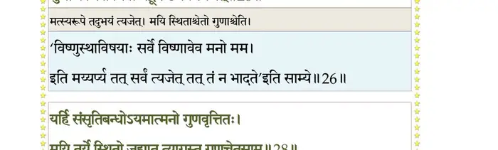
श्लोक २७
जाग्रत् स्वप्नः सुषुप्तिश्च गुणतो बुद्धिवृत्तयः ।
तासां विलक्षणो जीवः साक्षित्वेन विनिश्चितः ।। २७ ।।
तासां विलक्षणो जीवः साक्षित्वेन विनिश्चितः ।। २७ ।।
श्लोक २८
यर्हि संसृतिबन्धोऽयमात्मनो गुणवृत्तितः ।
मयि तुर्ये स्थितो जह्यात् त्यागस्तु गुणचेतसाम् ।। २८ ।।
मयि तुर्ये स्थितो जह्यात् त्यागस्तु गुणचेतसाम् ।। २८ ।।
भागवततात्पर्यनिर्णय
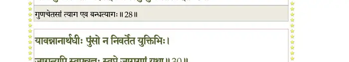
श्लोक २९
अहङ्कारकृतं बन्धमात्मनोऽर्थविपर्ययम् ।
विद्वान् निर्विद्य संसारचिन्तां तुर्ये स्थितस्त्यजेत् ।। २९ ।।
विद्वान् निर्विद्य संसारचिन्तां तुर्ये स्थितस्त्यजेत् ।। २९ ।।
श्लोक ३०
यावन्नानार्थधीः पुंसो न निवर्तेत युक्तिभिः ।
जाग्रत्यपि स्वपन्नज्ञः स्वप्ने जागरणं यथा ।। ३० ।।
जाग्रत्यपि स्वपन्नज्ञः स्वप्ने जागरणं यथा ।। ३० ।।
भागवततात्पर्यनिर्णय
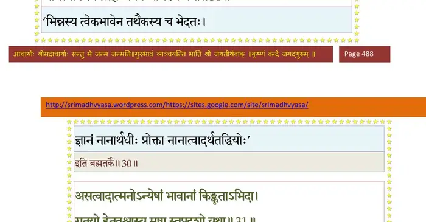
श्लोक ३१
असत्त्वादात्मनोऽन्येषां भावानां किंकृताऽभिदा ।
गतयो हेतवश्चास्य मृषा स्वप्नदृशो यथा।। ३१ ।।
गतयो हेतवश्चास्य मृषा स्वप्नदृशो यथा।। ३१ ।।
भागवततात्पर्यनिर्णय
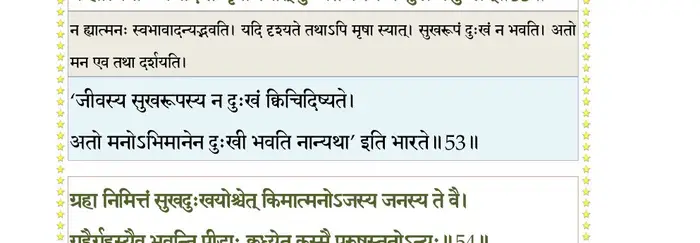
श्लोक ३२
यो जागरे बहुविधान् क्षणधर्मिणोऽर्थान्
भुङ्क्ते समस्तकरणो हृदि तत्सदृक्षान् ।
स्वप्नेऽथ सुप्त उपसंहरते स एकः
स्मृत्यन्वयात् त्रिगुणवृत्तिदृगिन्द्रियेशः।। ३२ ।।
भुङ्क्ते समस्तकरणो हृदि तत्सदृक्षान् ।
स्वप्नेऽथ सुप्त उपसंहरते स एकः
स्मृत्यन्वयात् त्रिगुणवृत्तिदृगिन्द्रियेशः।। ३२ ।।
भागवततात्पर्यनिर्णय
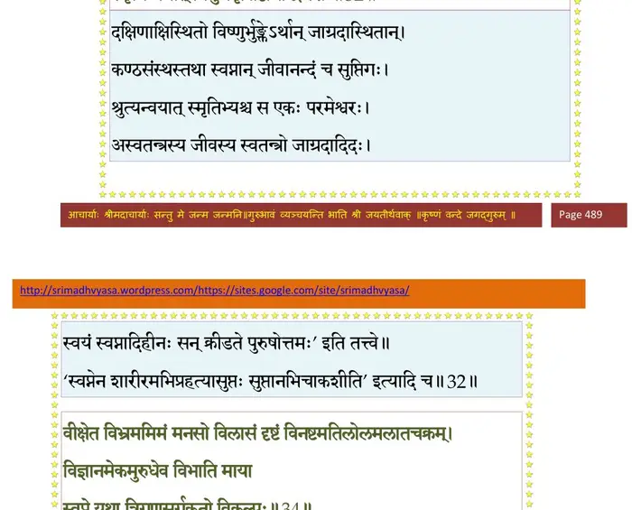
श्लोक ३३
एवं विमृश्य गुणतो मनसस्त्र्यवस्था
मन्मायया मयि कृता इति निश्चितार्थाः ।
सञ्छिद्य हार्दमनुमानसदुक्तितीक्ष्ण-
ज्ञानासिना भजत माऽखिलसंशयाधिम्।। ३३ ।।
मन्मायया मयि कृता इति निश्चितार्थाः ।
सञ्छिद्य हार्दमनुमानसदुक्तितीक्ष्ण-
ज्ञानासिना भजत माऽखिलसंशयाधिम्।। ३३ ।।
श्लोक ३४
वीक्षेत विभ्रममिमं मनसो विलासं
दृष्टं विनष्टमतिलोलमलातचक्रम् ।
विज्ञानमेकमुरुधेव विभाति माया
स्वप्ने यथा त्रिगुणसर्गकृतो विकल्पः।। ३४ ।।
दृष्टं विनष्टमतिलोलमलातचक्रम् ।
विज्ञानमेकमुरुधेव विभाति माया
स्वप्ने यथा त्रिगुणसर्गकृतो विकल्पः।। ३४ ।।
भागवततात्पर्यनिर्णय
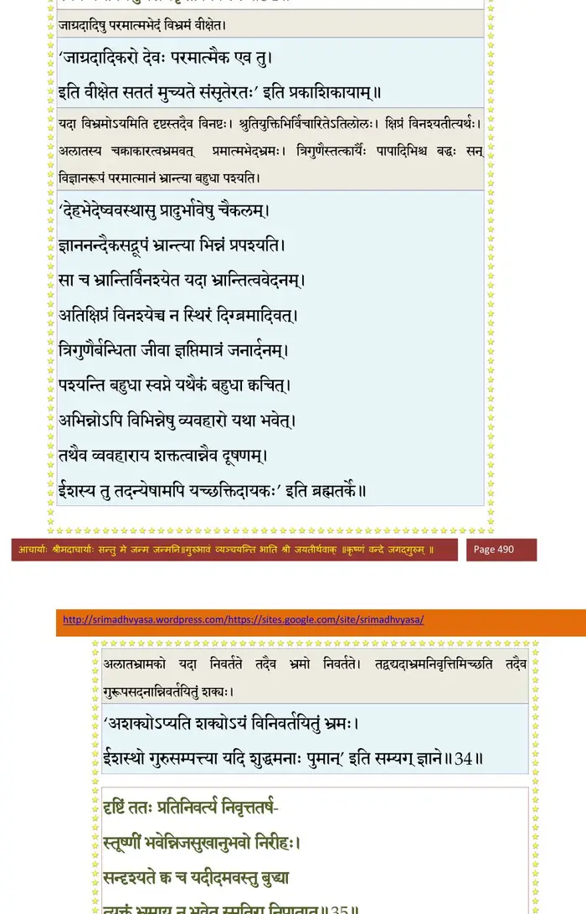
श्लोक ३५
दृष्टिं ततः प्रतिनिवर्त्य निवृत्ततर्ष-
स्तूष्णीं भवेन्निजसुखानुभवो निरीहः ।
सन्दृश्यते क्वच यदीदमवस्तुबुद्ध्या
त्यक्तं भ्रमाय न भवेत् स्मृतिरानिपातात्।। ३५ ।।
स्तूष्णीं भवेन्निजसुखानुभवो निरीहः ।
सन्दृश्यते क्वच यदीदमवस्तुबुद्ध्या
त्यक्तं भ्रमाय न भवेत् स्मृतिरानिपातात्।। ३५ ।।
भागवततात्पर्यनिर्णय
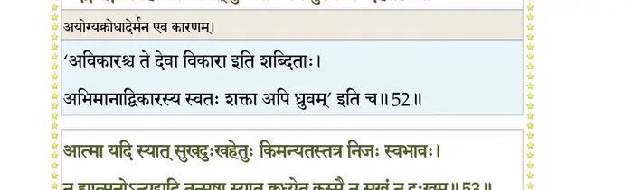
श्लोक ३६
देहं च नश्वरमवस्थितमु(त्थि)ज्झितं च
सिद्धो न पश्यति यतोऽध्यगमत् स्वरूपम् ।
दैवादुपेतमथ दैववशादपेतं
वासो यथा परि(कृ)वृतं मदिरामदान्धः।। ३६ ।।
सिद्धो न पश्यति यतोऽध्यगमत् स्वरूपम् ।
दैवादुपेतमथ दैववशादपेतं
वासो यथा परि(कृ)वृतं मदिरामदान्धः।। ३६ ।।
भागवततात्पर्यनिर्णय
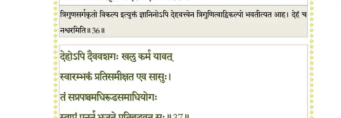
श्लोक ३७
देहोऽपि दैववशगः खलु कर्म यावत्
स्वारम्भकं प्रति समीक्षत एव सासुः ।
तं सप्रपञ्चमधिरूढसमाधियोगः
स्वाप्नं पुनर्न भजते प्रतिबुद्धवत् सः।। ३७ ।।
स्वारम्भकं प्रति समीक्षत एव सासुः ।
तं सप्रपञ्चमधिरूढसमाधियोगः
स्वाप्नं पुनर्न भजते प्रतिबुद्धवत् सः।। ३७ ।।
भागवततात्पर्यनिर्णय
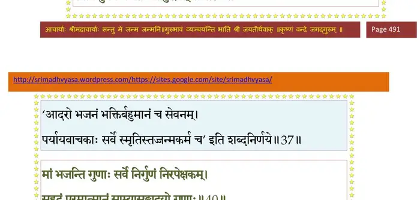
श्लोक ३८
मयैतदुक्तं वो विप्रा गुह्यं यत् साङ्ख्ययोगयोः ।
जानीत माऽऽगतं यज्ञं युष्मद्धर्मविवक्षया।। ३८ ।।
जानीत माऽऽगतं यज्ञं युष्मद्धर्मविवक्षया।। ३८ ।।
श्लोक ३९
अहं योगस्य साङ्ख्यस्य सत्यस्यर्तस्य तेजसः ।
परायणं द्विजश्रेष्ठाः श्रियः कीर्तेर्दमस्य च।। ३९ ।।
परायणं द्विजश्रेष्ठाः श्रियः कीर्तेर्दमस्य च।। ३९ ।।
श्लोक ४०
मां भजन्ति गुणाः सर्वे निर्गुणं निरपेक्षकम् ।
सुहृदं परमात्मानं साम्यासङ्गादयो गुणाः।। ४० ।।
सुहृदं परमात्मानं साम्यासङ्गादयो गुणाः।। ४० ।।
भागवततात्पर्यनिर्णय
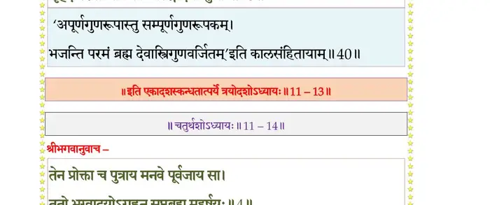
श्लोक ४१
इति ते च्छिन्नसन्देहा मुनयः सनकादयः ।
सभाजयित्वा परया भक्त्याऽगृणत संस्तवैः ।। ४१ ।।
सभाजयित्वा परया भक्त्याऽगृणत संस्तवैः ।। ४१ ।।
श्लोक ४२
तैरहं पूजितः सम्यक् संस्तुतः परमर्षिभिः ।
प्रतीयाय स्वकं धाम पश्यतः परमेष्ठिनः ।। ४२ ।।
प्रतीयाय स्वकं धाम पश्यतः परमेष्ठिनः ।। ४२ ।।
।। इति श्रीमद्भागवते एकादशस्कन्धे त्रयोदशोऽध्यायः ।।